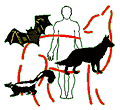

Бешенство до сих пор остается значимой медицинской и экономической проблемой. По приблизительной оценке, около 50000 человек в мире ежегодно умирают от бешенства. В сообщении представлена информация об основных источниках инфекции и проведении её специфической профилактики.
Бешенство до сих пор остаётся значимой медицинской и экономической проблемой. По приблизительной оценке, около 50000 человек в мире ежегодно умирают от бешенства. С 1990 г. на территории США ежегодно возникают в среднем три случая инфекции, а профилактику антирабической вакциной получают около 39000 человек, что обходится государству в 6 млн. долларов.

Свыше 85% всех зафиксированных в США случаев заболевания связывают с контактом с инфицированными дикими животными, особенно летучими мышами, енотами, скунсами, лисами и койотами, причём основным путём заражения является укус летучей мыши. Мелкие грызуны, такие как белки, хомячки, морские свинки, бурундуки, крысы и мыши, а также зайцы и кролики инфицируются вирусом бешенства крайне редко и не заражают людей.
С 50-х гг. прошлого века в США было отмечено значительное снижение частоты возникновения бешенства у домашних животных, что, соответственно, привело к снижению риска заражения от них этой инфекцией. С 90-х гг. сообщается о более частом возникновении бешенства у домашних кошек по сравнению с собаками, что обусловлено редким проведением у кошек вакцинации, а также их бродячими привычками, в силу чего они чаще контактируют с дикими животными. В развивающихся странах собаки остаются основным источником инфекции.
Возбудителем бешенства является рабдовирус. Инфекция передаётся через укушенные или контаминированные слюной раны, а также неповреждённые слизистые оболочки. Заражение может происходить через кажущиеся незначительными или практически незаметные повреждения. Контакт с инфицированным животным, его кровью, мочой или фекалиями не считается фактором риска инфицирования. Вирус проникает в ЦНС хозяина и вызывает энцефаломиелит с летальным исходом. Инкубационный период варьирует от 10 до 90 дней.
Все укусы дикими животными считаются потенциально заразными и должны сопровождаться проведением специфической профилактики антирабической вакциной, за исключением случаев, когда известно, что животное не инфицировано. За здоровыми домашними собаками, кошками и грызунами, укусившими человека, наблюдают в течение 10 дней с целью выявления симптомов бешенства. Профилактика укушенным лицам в течение данного периода не проводится. Исключением являются ситуации, когда повреждение локализуется в области головы или шеи, поскольку инкубационный период в данном случае сокращается до 4 дней.
Connelly K.P.
Pets and pests: Misconceptions about Zoonotic infections.
Infect Med 2004; 21(11): 557-65.